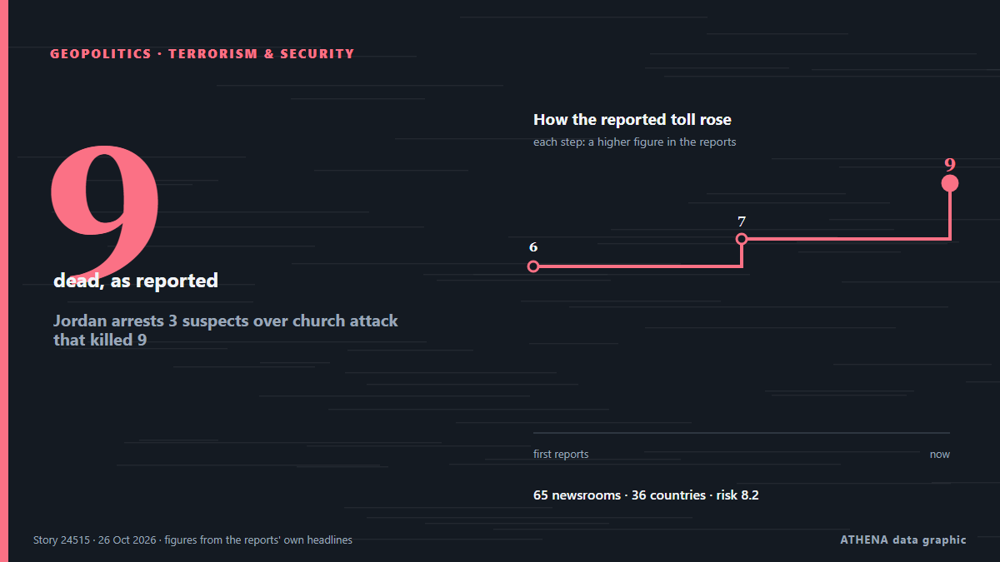

Ближний Восток и Северная Африка
Ближний Восток и Северная Африка: последние события по странам, с риском, источниками и странами от ATHENA.

ГеополитикаJordan arrests 3 suspects over church attack that killed 9
Sources said two gunmen opened fire for at least seven minutes in a church in Karak area. из Express Tribune
Rubio says US yet to decide on new Iran strikes
ATLANTA: US President Donald Trump has not made a decision about fresh strikes on Iran amid stalled peace talks, US Secretary of State Marco Rubio said Saturday. из Business Recorder
After JD Vance, now Trump Jr blames Iran war for US midterms defeat
Says war in Iran had weighed on Republican candidates, even as voters backed his handling of it. из Express Tribune
Trump says US will end military aid to Israel by end of the year
Says democrats, left-wing politicians using US financial support to Israel as a talking point to criticise Republicans. из Express Tribune
Israeli army kills 2 Palestinians in occupied West Bank shooting
West Bank: Palestinian youth injured, settlers attack cars, steal olive harvest A Palestinian youth suffered injury to the head due to a live-fire shrapnel during a raid by the Israeli military in… из Middle East Eye
Asian Cup in Saudi Arabia to be postponed
Saudi Arabia, which will host the FIFA World Cup in 2034, will have an opportunity to use the 2027 Asian Cup as a dress rehearsal for the World Cup. из Sportstar
Israel faces new era of sinking US support after election
LONDON: It is a measure of how much is at stake in Tuesday’s legislative election in Israel, and how finely balanced the outcome might be, that a record 22,000 police officers have been deployed in… из Arab News